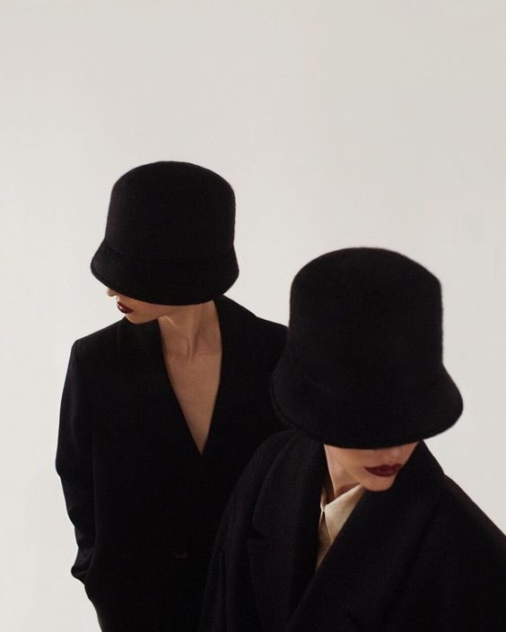
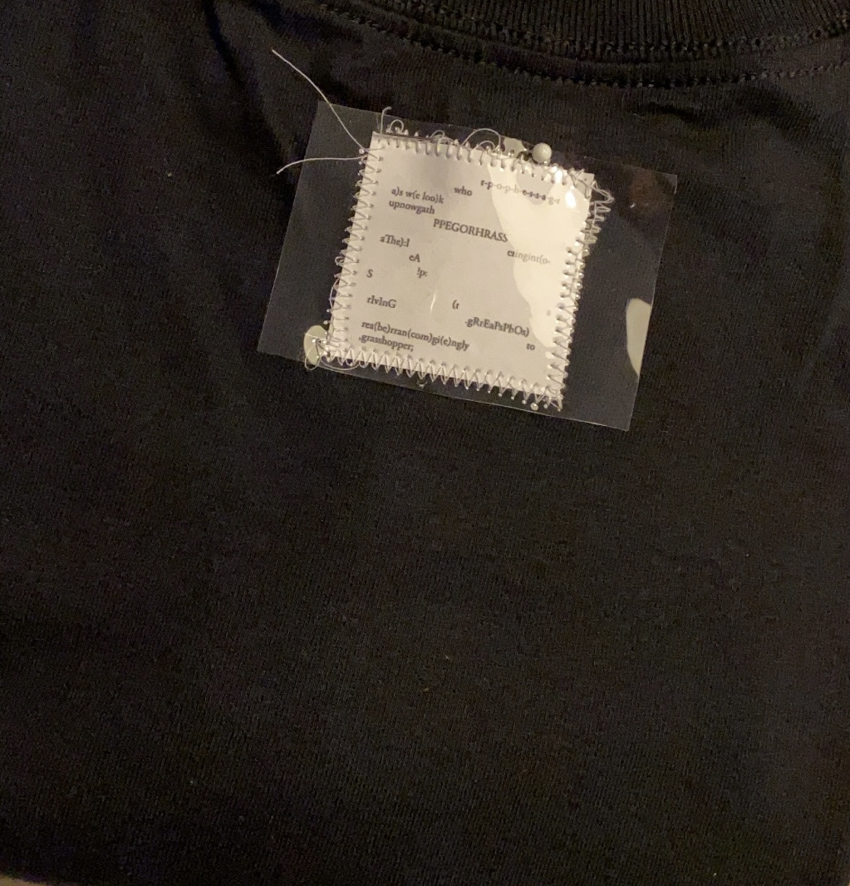
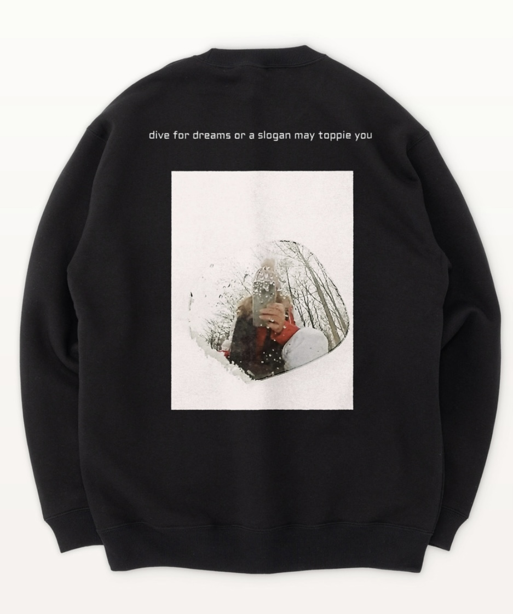
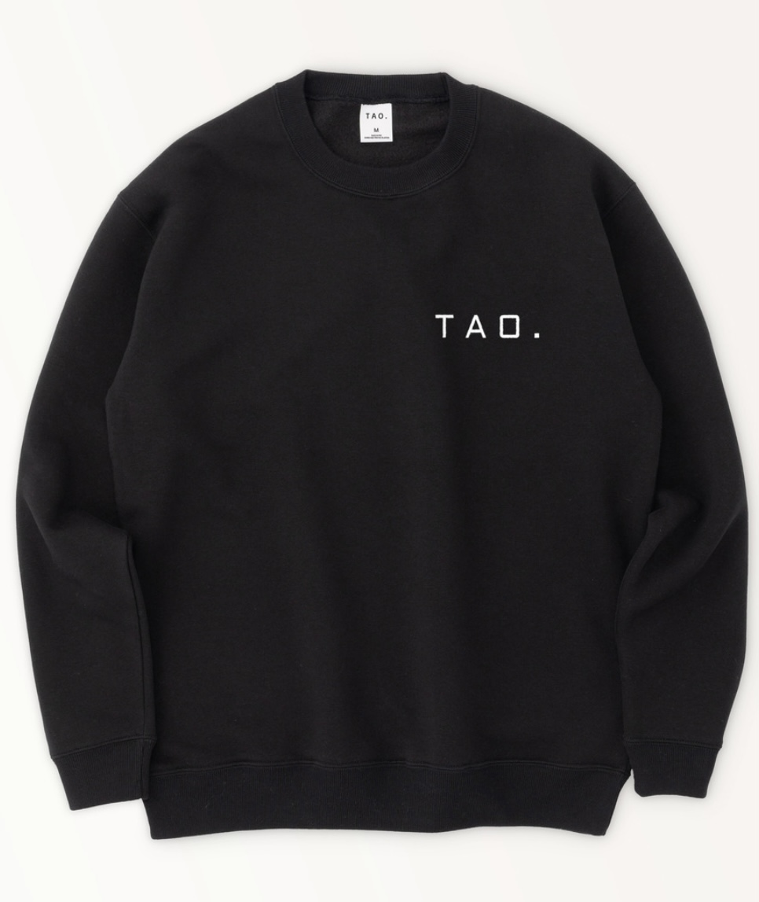

ABOUT
I grew up in Japan until 22 years old. I am from Osaka,Japan.
Which is beautiful city and there is good food.
I love Takoyaki. I also love stake and salda.
I moved to San francisco in 2019. I worked as a babysitter.
I studied English at the time.
I also studied about website(Html,CSS).
I love fashion and shopping.
I want to be fashion stylist future. this is my dream.
I got cutie dog in 2020 and living together now:)
①favorite food..
stake, salda, takoyaki, sushi, ramen, korean bbq,
taco, Acaibowl, nacho, indian curry, mochi, thai food
②music
ph-1, billie eilish, keshi, one ok rock, crush, zico,
zion.t, roderick porter, kota the friend, gatti, bobby
③hobby
baking, hiking, eating, shopping
④my design
  